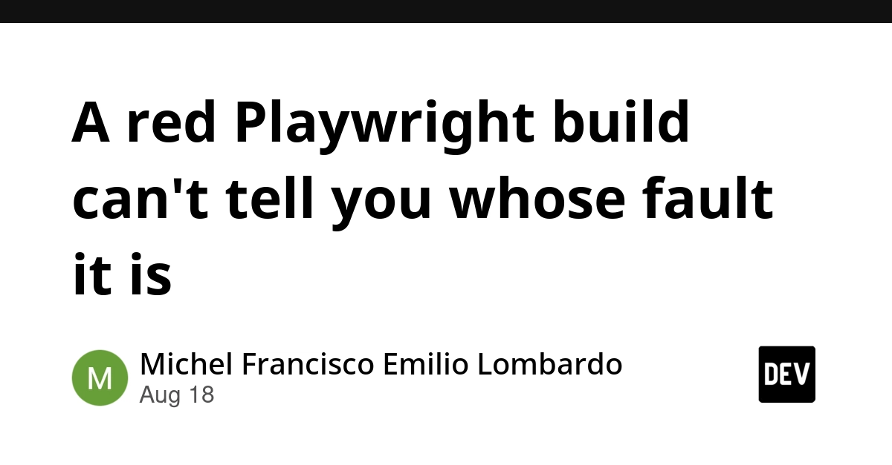
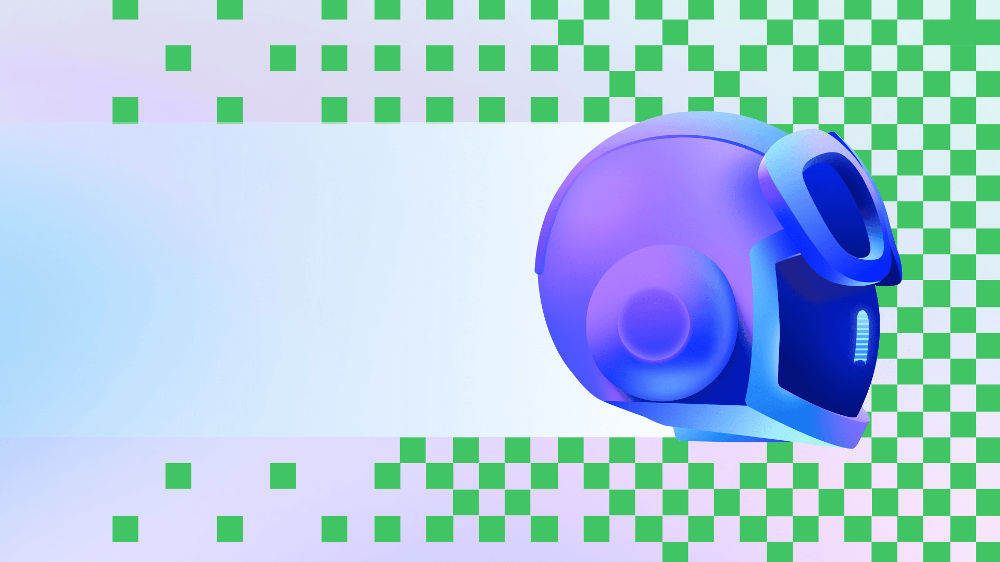
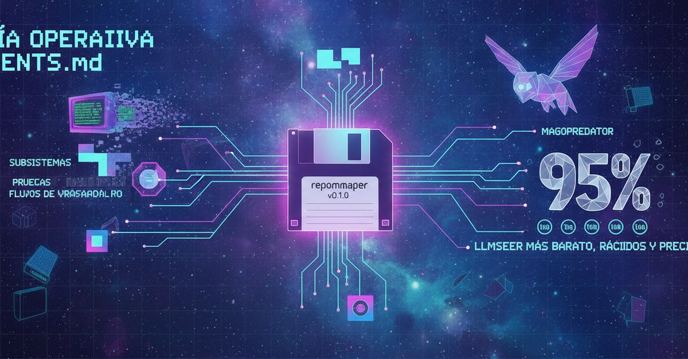
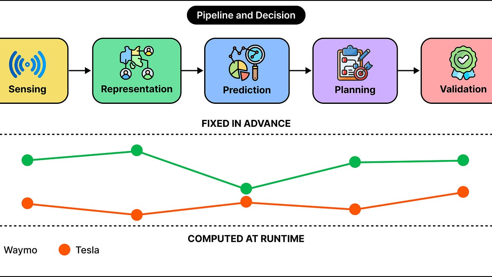
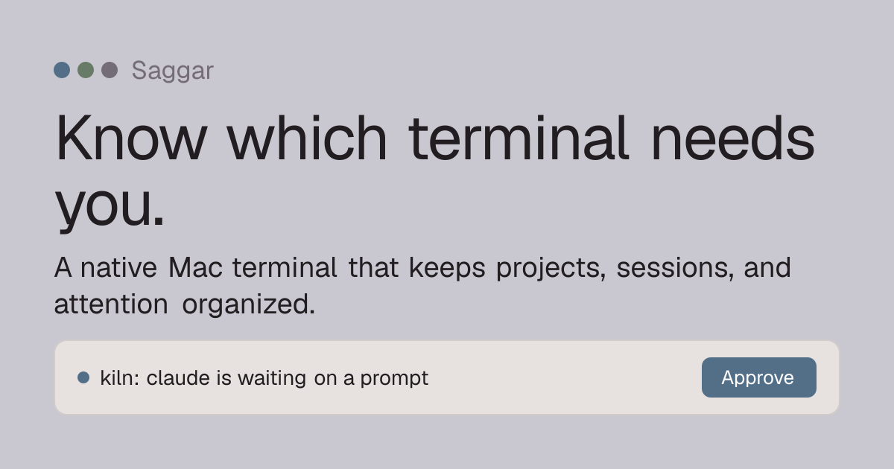
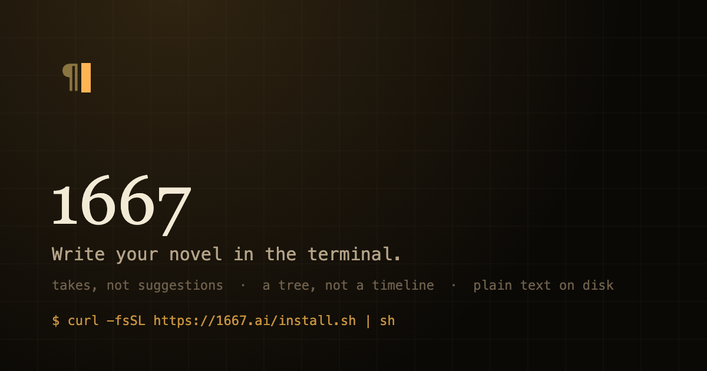
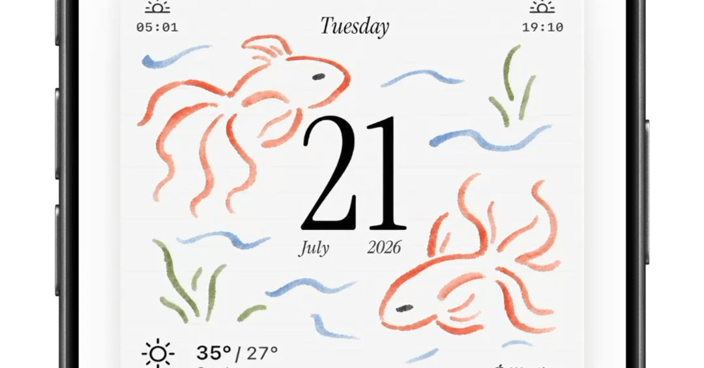
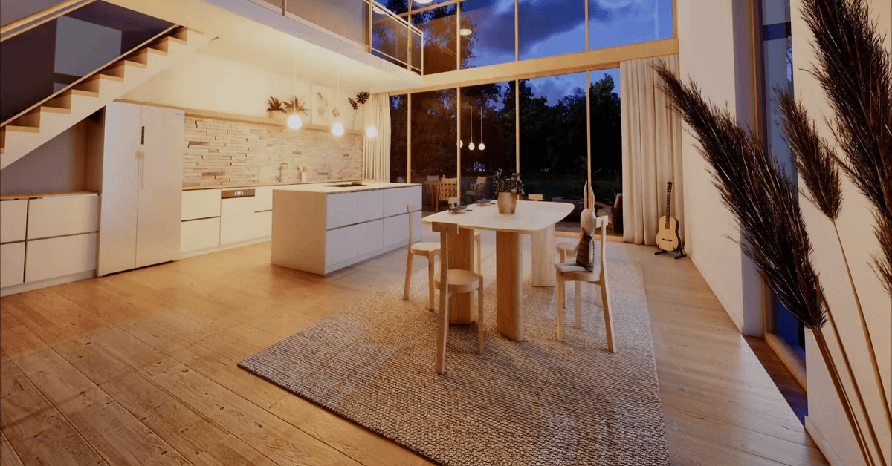

🔥 Top 3 (must read)
Cursor launches Origin, a GitHub alternative
(HN discussion) — Cursor now offers its own code hosting product, positioned as a direct alternative to GitHub. The pitch is a code platform built around agent-driven development rather than human-only pull requests. Why it matters: if your team runs coding agents at scale, the place where code lives and gets reviewed may be the next thing to change — worth watching before making platform bets.

A red Playwright build can't tell you whose fault it is
A failing E2E run always hides one question: did the app break, or did the test go stale? The post digs into why the standard Playwright report can't answer that, and what signals would. Why it matters: this is the exact daily pain of owning a Playwright suite in CI, and a good framing to share with your team.

How canvases make agentic workflows visible, steerable, and cost-efficient
GitHub argues that chat is fine for stating intent, but agent work gets lost in the scroll; a canvas view makes long agent runs visible and easier to steer mid-flight. Why it matters: you manage how a team adopts AI tools, and "how do we watch and steer agents" is becoming a real process question, not just a UI detail.

🛠 Tools & releases
CNCF announces Kubeflow's graduation
Kubeflow is now a graduated CNCF project, a maturity signal if you run ML/AI workloads on Kubernetes.
🤖 AI for developers
Designing Smart AI Agents: architecture patterns that survive production
Field notes on agent topologies, state design, and the failure modes that show up after 90 days in production, not in the demo.

repomapper v0.1.0
Tool that generates a compact AGENTS.md operating guide (subsystems, tests, conventions, known traps) for any repo, based on a 2026 paper on repository guidance for coding agents. Post is in Spanish.

👔 Engineering & teams
Waymo vs Tesla: two ways to build self-driving cars
ByteByteGo compares the two system architectures; a useful case study in how opposite design bets shape everything downstream.

🎯 For me
Playwright "whose fault is it" post
The is the strongest match today — it names the triage cost that makes E2E suites expensive to own.
Cursor Origin
matters for the EM angle: code review and hosting built around agents will affect team workflow choices.
Kubeflow graduation
is a small but real signal for your Kubernetes/infra interest.
💡 App ideas & indie builds
Saggar — a Mac terminal that keeps sessions and your attention organized
(HN) — Problem: devs juggle many terminal sessions (and now agent runs) and lose track. Inspiration: "attention management" as a product layer on top of an old tool category.

1667 — a terminal UI for writing fiction with language models
(HN) — Problem: writers want LLM help without losing control of their own text. Inspiration: a focused, opinionated UI for one creative workflow beats a generic chat box.

I built a calendar you can actually customize
Problem: mainstream calendars force one layout on everyone. Inspiration: taking a "solved" category and winning on customization is a classic indie wedge.

A simpler way to design architecture in 2D + 3D at the same time
Problem: pro CAD tools are too heavy for quick spatial design. Inspiration: syncing two views of the same model live is a strong UX idea that transfers to many editor apps.

Desktopcolors.com — a museum for solid background colors of classic OS
(HN) — Problem: none, really — it's pure nostalgia, and it still hit 142 points. Inspiration: tiny, joyful single-purpose sites can find a big audience with zero features.
D
🎓 Try this
Try Saggar for a day — a Mac terminal built to keep sessions and your attention organized. You run agent sessions in terminals all day, so this maps directly onto your workflow, and the HN thread (44 comments) has good notes on where it helps and where it doesn't.